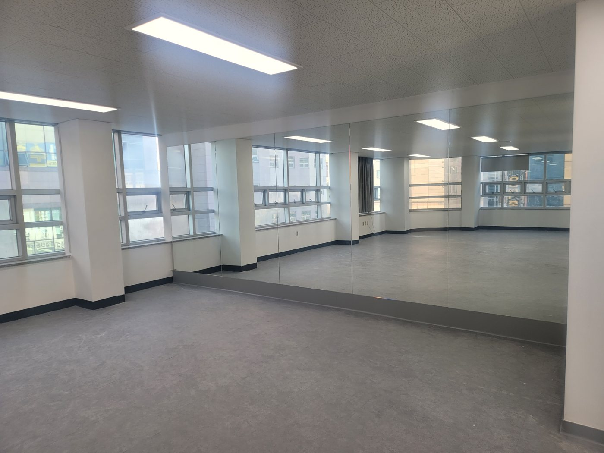

광주 광산구 신창동 방문요양 · 바우처 제공기관
넘어지실까, 끼니는 드실까
그 걱정부터 살핍니다
매일 가 보실 수 없는 보호자분을 위해, 방문하는 시간에 생활 속 낙상예방 · 식단 계획표 · 교구 인지활동을 챙깁니다.
- 장기요양등급이 아직 없어도 상담할 수 있습니다
- 상담을 받았다고 계약해야 하는 것은 아닙니다
- 계약 내용과 방문 계획·비용은 계약서와 동의서로 남습니다
상담 시간

- 기관
- 방문요양, 바우처 제공기관장기요양기관 지정명 표기
- 개원
- 2026년 1월
- 센터장 경력
- 노인복지 바우처 사업 10년
- 방문 기록
- 법정 급여제공기록지 제공
알아보실 때 드는 걱정,
이렇게 물어보세요
방문요양 급여비용은 보건복지부가 매년 고시합니다. 같은 급여를 같은 시간 받으시면 급여비용이 같으니, 비용보다 아래 질문으로 견주어 보세요. 시간대 가산과 비급여 항목은 계약서에서 확인하실 수 있습니다.
무엇을 할지,
시작하기 전에 정합니다
방문을 시작하기 전에 방문 계획을 세워 설명드리고 동의를 받습니다. 어르신 상태에 맞춰 이 세 가지를 살펴 계획에 담습니다.

교구 인지활동 · 약 20분
어르신의 상태에 맞춰 다양한 교구를 활용한 인지활동을 함께합니다.
균형 잡힌 식단 계획표
균형 잡힌 식생활을 이어가실 수 있도록 식단 계획표 제공과 실천을 돕습니다.
생활 속 낙상예방
어르신의 생활공간에서 낙상 위험 요소를 살피고 더 안전한 일상생활을 돕습니다.
방문 때 한 일은 급여제공기록지에 남습니다.
- 급여제공기록지는 모든 장기요양기관이 법에 따라 작성하고 제공하는 기록입니다.
- 방문요양은 주 1회 이상, 전자 전송을 하는 경우 월 1회 이상 받으십니다.
계약하실 때
문서로 받으시는 것
계약 내용과 방문 계획·비용은 계약서와 동의서로 남습니다.
해 드리는 것
- 정한 시간에 댁으로 방문해 신체활동 지원(세면·식사 도움 등), 인지활동 지원, 정서 지원, 가사 및 일상생활 지원(취사·청소·세탁 등)을 합니다
- 등급 신청 순서와 준비 서류를 안내해 드립니다
해 드릴 수 없는 것
- 방문요양은 정한 시간에 오는 돌봄입니다. 그 밖의 시간은 가족 돌봄이나 다른 급여와 함께 계획하셔야 합니다
- 가사 지원은 어르신 본인을 위한 것만 가능합니다. 다른 가족의 식사·빨래는 해 드릴 수 없습니다
- 등급별 월 한도액을 넘는 이용분은 전액 본인부담입니다
- 복지용구 판매·대여는 하지 않습니다
- 등급은 저희가 정하지 않습니다. 국민건강보험공단 등급판정위원회가 판정합니다
보호자께 드리는 인사
행복나누미케어센터 센터장입니다.
학원에서 30년 동안 학부모님들의 이야기를 들었고, 노인복지 바우처 사업을 10년 동안 했습니다. 그 10년 동안 배운 것은 사람마다 필요한 도움이 다르다는 것이었습니다.
센터는 2026년 1월에 문을 열었습니다.
장기요양등급이 아직 없으셔도, 무엇부터 해야 할지 정리가 안 되셨어도 연락 주세요. 지금 상황에 맞는 순서를 함께 짚어 드리겠습니다.
첫 상담은
이렇게 진행됩니다
상담을 받았다고 계약해야 하는 것은 아닙니다.
- 먼저 듣습니다
첫 통화에서는 설명보다 먼저, 어르신이 요즘 어떻게 지내시는지와 무엇이 가장 걱정이신지를 듣습니다.
- 지금 해야 할 순서를 짚어 드립니다
등급 신청 전이라면 신청 순서와 준비 서류를, 등급을 받으셨다면 계약 순서를 함께 봅니다.
- 계약은 원하실 때
장기요양인정서를 받으신 뒤 원하실 때 계약하고, 방문 계획에 동의하시면 시작합니다.
준비해 두시면 상담이 구체적입니다
- 어르신이 요즘 하루를 어떻게 보내시는지혼자 계시는 시간, 식사, 잠
- 최근에 넘어지신 적이 있는지
- 지금 가장 걱정되는 한 가지
- 장기요양인정서등급을 받으신 경우
- 개인별장기요양이용계획서등급을 받으신 경우, 인정서와 함께
보호자분들이 먼저 물으시는 것
제도 내용은 2026년 10월 기준 법령과 고시로 확인했습니다.
장기요양등급이 없어도 상담할 수 있나요?
네. 행복나누미케어센터는 등급이 나오기 전에도 상담합니다. 등급 신청 순서와 준비 서류부터 함께 짚어 드립니다.
매일 가 볼 수 없는데, 어르신 상황은 어떻게 알 수 있나요?
방문 때 한 일은 급여제공기록지에 남고, 방문요양은 주 1회 이상(전자 전송을 하는 경우 월 1회 이상) 받으십니다.
기록지 말고 따로 알려 드리는 방법
방문요양과 주간보호는 무엇이 다른가요?
방문요양은 요양보호사가 어르신 댁으로 방문해 신체활동과 가사활동 등을 돕는 급여입니다. 주·야간보호는 하루 중 일정 시간 어르신이 기관에 머무르며 신체활동 지원과 심신기능 유지를 위한 프로그램을 받는 급여입니다. 어느 쪽이 맞는지는 어르신 상태와 가족 일정에 따라 다릅니다.
혼자 사시는데, 등급 결과가 나오기 전에도 이용할 수 있나요?
등급을 받으시는 경우, 함께 사는 가족이 없거나 함께 사는 가족이 미성년자 또는 65세 이상 어르신뿐이라면 신청서를 낸 날부터 장기요양급여를 받으실 수 있는 예외가 있습니다. 증명서류를 붙여 국민건강보험공단에 따로 신청하고, 공단이 확인해 결정합니다. 등급을 받지 못하시는 경우 그 기간의 비용은 공단에 먼저 확인해 주세요.
최근에 넘어지셔서 치료 중인데, 지금 등급을 신청해도 되나요?
골절·수술 직후처럼 회복 중이시면 판정 결과가 달라질 수 있습니다. 등급은 「6개월 이상 혼자서 일상생활을 하기 어려운지」를 보고 판정하기 때문입니다. 신청 시기는 국민건강보험공단(1577-1000)에 먼저 문의해 주세요.
방문요양 비용은 어떻게 정해지나요?
급여비용은 보건복지부가 매년 고시하고, 본인부담률은 법령으로 정해져 있습니다. 재가급여 본인부담은 급여비용의 15%입니다. 국민기초생활보장법에 따른 의료급여 수급자는 부담이 없고, 법령이 정한 감경 대상(그 밖의 의료급여 수급권자, 보험료 기준 이하인 분 등)은 6% 또는 9%로 줄어듭니다. 등급별 월 한도액을 넘는 부분과 급여 범위 밖의 비용은 전액 본인부담이며, 밤 10시부터 오전 6시 사이, 일요일, 공휴일 방문은 급여비용이 가산됩니다.
비급여 항목이 있는지, 있다면 항목별 비용
요양원(시설)은 몇 등급부터 이용할 수 있나요?
장기요양 1·2등급은 재가급여와 시설급여 중에서 고를 수 있고, 3~5등급은 원칙적으로 재가급여를 이용합니다. 다만 3~5등급이라도 ① 주로 돌보는 가족이 수발하기 어렵거나 ② 주거환경이 열악해 입소가 불가피하거나 ③ 치매 등에 따른 문제행동으로 재가급여를 이용할 수 없어 등급판정위원회가 시설급여가 필요하다고 인정하면 시설급여를 이용할 수 있습니다. 인지지원등급은 주·야간보호, 단기보호, 종일 방문요양, 기타재가급여만 이용할 수 있습니다.
다니던 센터를 옮길 수 있나요?
이용하실 기관은 계약으로 정해지므로, 다른 기관과 새로 계약하실 수 있습니다. 해지 시기와 절차는 지금 이용 중인 기관과 맺은 계약서의 계약기간과 내용을 먼저 확인해 보세요.
계약하러 갈 때 무엇을 챙기나요?
장기요양인정서와 개인별장기요양이용계획서를 함께 가져오시면 됩니다.
새로 연 센터인데, 평가 결과는 어디서 보나요?
행복나누미케어센터는 2026년 1월에 문을 열었습니다. 평가 결과 없음 / 평가 전 장기요양기관 평가 결과는 국민건강보험공단 노인장기요양보험 누리집의 「장기요양기관 찾기」에서 확인하실 수 있고, 계약 전에는 계약서와 방문 계획을 문서로 보고 정하실 수 있습니다.
어느 지역까지 방문하나요?
광주 광산구 신창동·수완동·운남동 인근을 중심으로 방문합니다.
전체 방문 권역
집에서 모실지 시설이 나을지는
어르신 상태와 가족 사정에 따라 다릅니다.
지금 상황에서 무엇부터 할지 함께 짚어 드립니다.
문자에는 성함과 연락 가능한 시간만 남겨 주세요. 어르신 상황은 통화로 여쭙겠습니다.
행복나누미케어센터
- 주소전남광주통합특별시 광산구 신창동 1125-3, 4층
- 전화062-419-1754
- 문자010-9884-2040
- 상담 시간요일 · 시간
- 다니는 동네신창동수완동운남동전체 권역
Google 지도에서 보기 · 주차 · 엘리베이터

등급 신청과 지역 돌봄 창구
등급 신청은 국민건강보험공단에 합니다. 신청 순서와 준비 서류는 저희 상담에서도 안내해 드립니다.
| 등급 신청·판정 | 국민건강보험공단 1577-1000장기요양등급 신청과 판정 일정을 문의하실 수 있습니다. |
|---|---|
| 지역 통합돌봄 | 돌봄콜 1660-2642 (광산구 5번)광주 통합돌봄 접수 전화입니다. 평일 9시~18시 |
| 가까운 곳에서 직접 | 주소지 동 행정복지센터의료·요양 통합돌봄 등 지역 돌봄 서비스를 접수합니다. |